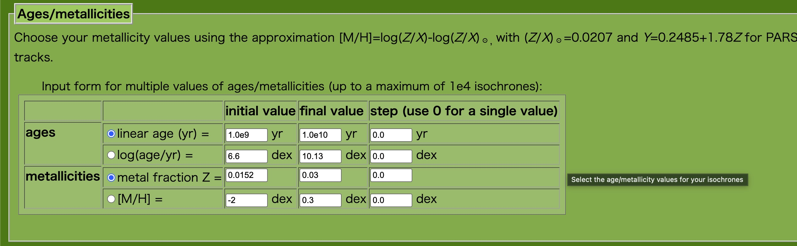
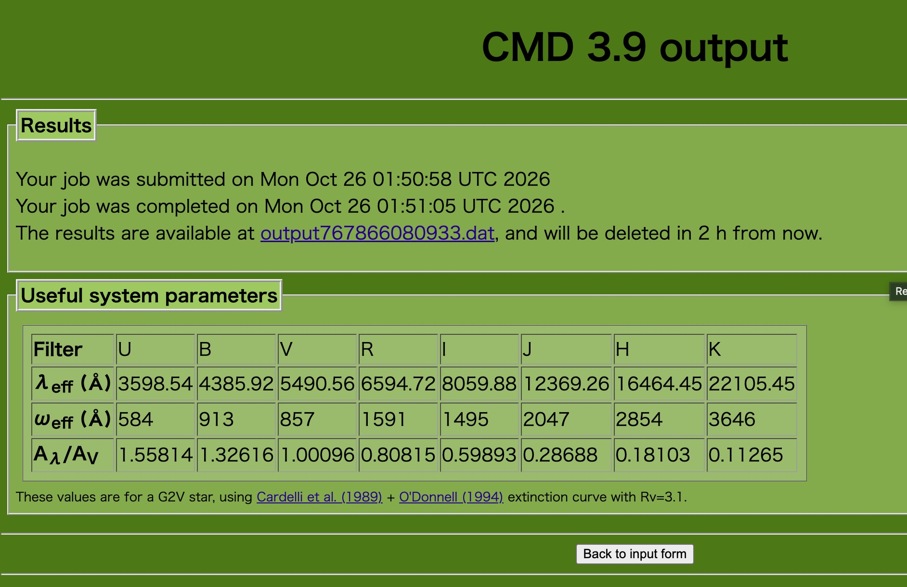
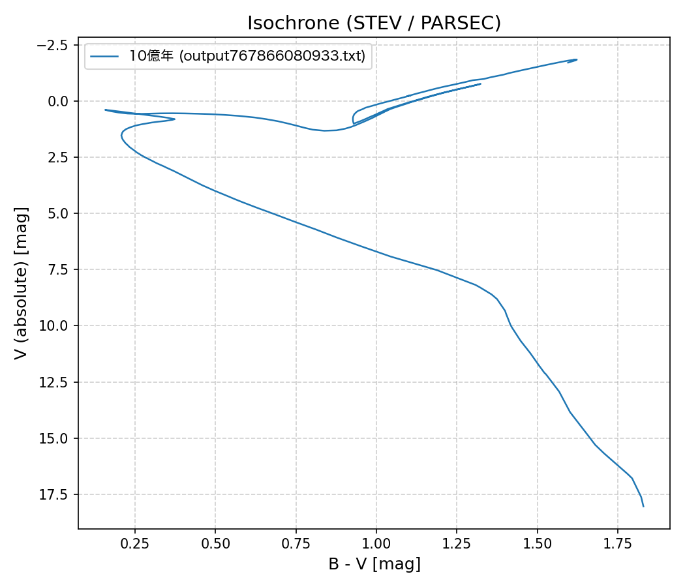
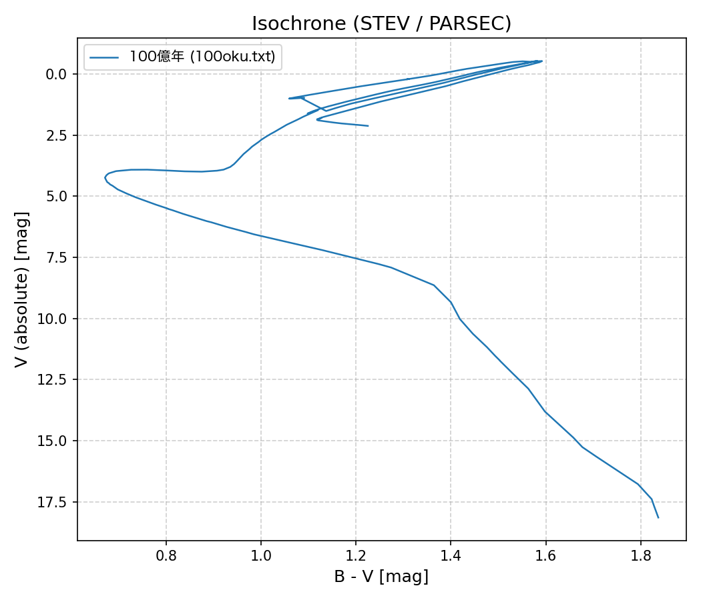
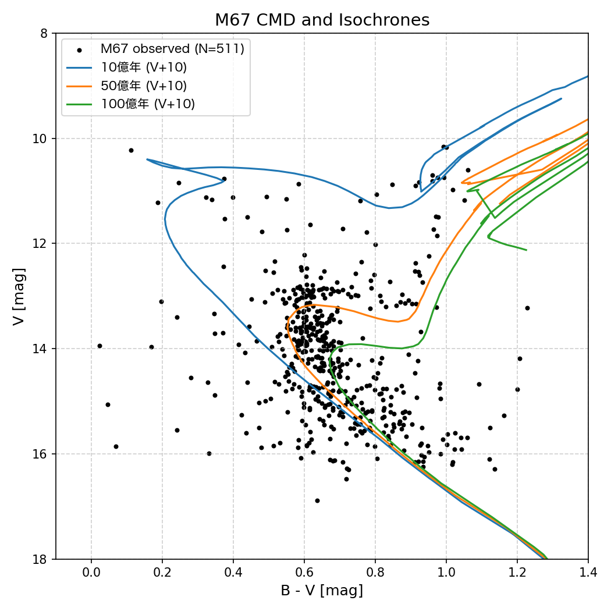

[ 松江工業高等専門学校 | 情報工学科 | 情報工学実験トップに戻る ]
測光で作ったM67のHR図(色等級図、CMD)を、理論計算で得られた等時曲線(=ある年齢の様々な質量の星のHR図)と比べて、M67の年齢と距離を求める。作業自体はトップページにある解説動画も参照すること。
- 恒星の内部構造と進化は、物理法則(重力と圧力のつり合い、核融合によるエネルギー生成、エネルギーの輸送など)を連立させた方程式を数値的に解くことで計算できる。
- 生まれたときの質量と化学組成(金属量)が決まれば、その星が各年齢でどれくらいの明るさ・色(表面温度)になるかが求まる。
- 質量の大きい星ほど明るく、燃料を早く使い切るので寿命が短い。主系列での水素燃焼を終えた星は、主系列を離れて巨星(HR図の右上)へと進化する。
- 星団の星は「ほぼ同じ時期に、同じ化学組成で」生まれたと考えられる。そこで、同じ年齢で質量だけが異なる星をHR図上に並べた曲線を考える。これを等時曲線(Isochrone)という。
- まずは10億年(1 Gyr)の等時曲線を取得する。
- STEVのページで主に設定する項目
- Ages(年齢)：年齢を年単位で指定する。10億年なら1e9。

図1. 年齢の指定例
- Metallicities(金属量)：M67は太陽とほぼ同じ化学組成なので、太陽金属量([M/H]=0)のままでよい。
- その他の項目はデフォルトのままでよい。
- ページ下の「Submit」をクリックし、結果ページに表示されるリンクから出力ファイル(テキストファイル)をダウンロードして保存する。

図2. 出力ファイルの例。output----.datファイルを保存。(Macの場合は、リンク先を別名で保存)。出力ファイルの拡張子はtxtが良い。
- 出力ファイルの先頭の「#」で始まる行はコメント(説明)。データの各列のうち、必要なのはBmag(B等級)とVmag(V等級)の列。どの列がそれにあたるかは、データの直前にある列名の行で確認する。
- 取得方法の詳細は、トップページの「データ入手方法の説明」も参照すること。
- 取得した結果から、(B-V)magを計算し、横軸にB-V等級、縦軸にV等級としてグラフを作る。HR図と同じく、縦軸は数字が小さい方が上になるようにする。
- グラフを作る方法は自由(Excelでも良い)。HR図と同じようにpythonで作図すると、あとで実測のHR図と重ねるのが楽になる。gnuplotでも良い

図3. 10億年の等時曲線の作図例。pandasとmatplotlibを利用。この例だとB-V=0.25等級付近が転向点。

図4. 100億年の等時曲線の作図例。この例だとB-V=0.7等級付近が転向点。10億年(図3)より転向点が暗く、赤く(右下へ)移動している。
- 主系列の上端で、等時曲線が巨星の方向(B-V等級が大きい右上側)へ曲がる部分を転向点(ターンオフ点)という。
- 転向点の星は、ちょうど今、主系列での水素燃焼を終えようとしている星。
- 星団の年齢が古いほど、明るく寿命の短い星から順に主系列を離れていくので、転向点は暗く、赤く(右下へ)移動する。
- この転向点を目印に年齢を推定する。10億年だけでなく、30億年、100億年など、年齢を変えた等時曲線を取得して試してみる。
- 自分で作ったM67のHR図の転向点の形と最もよく合う年齢を探す。複数の年齢の等時曲線を1枚のグラフに重ねて描くと比べやすい。
- STEVの等時曲線は絶対等級(星を10 pcの距離に置いたときの等級)での結果である。一方、測光で求めたHR図は見かけの等級。
- 大雑把に年齢がわかったら、その年齢の等時曲線を縦方向(V等級方向)に平行移動させて、実測のHR図に重なるようにする。このときの移動量(V等級のオフセット)が、見かけの等級mと絶対等級Mの差m-M(距離指数)になる。

図5. 10億年、50億年、100億年の等時曲線のV等級を仮に10等級暗くオフセットさせて、実測したM67のHR図(図7のデータ)と重ねた例。実測の転向点は10億年と100億年の等時曲線の転向点の間にあり、50億年の等時曲線の転向点に近い(ように見える。心の目で見て良い)。オフセットの10等級の値は正確でない。自分なりに良い値を選ぶこと（目分量でも良い。最小二乗法などでマッチングさせる人がいたらすごいけどそこまでする必要はない）
- 距離は、座学で距離を求めたときに使ったポグソンの式の変形バージョンを使って求める。
- 明るさLは距離Dの2乗で暗くなる(L∝D-2)ので、ポグソンの式 m2 - m1 = -2.5 log(L2/L1) は次のように書き換えられる。
m2 - m1 = -2.5 log(D2/D1)-2
- 絶対等級は10 pcの距離に置いたときの等級なので、m1を絶対等級M(D1 = 10 pc)、m2を実測の見かけの等級m(D2がM67までの距離)とする。
- V等級のオフセット(m - M)を代入して、M67までの距離D2を求める。logの底は10。
- 求めた距離をパーセクから光年にも換算してみる(1 pc ≒ 3.26 光年)。
- 年齢と距離が求まったら、文献値(トップページの参考文献など)と比較して考察する。
Last Updated: 2026/10/26, Since: 2026/10/26.
The layout of this page is generated by Makefile.rd2html.